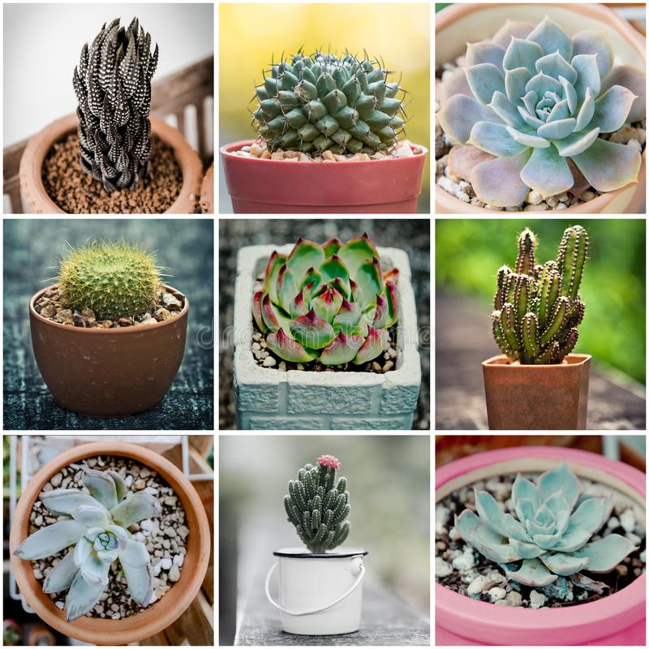
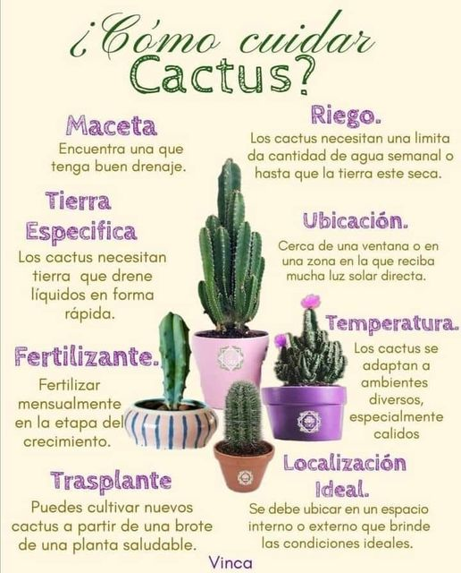

LA VIDA ES MEJOR CUIDANDO UNA SUCULENTA
GOOD VIBES ONLY
¿Qué son las su culentas?
Las suculentas constituyen un grupo diverso de plantas caracterizadas por sus hojas y tallos carnosos. Los cactus constituyen un gran grupo de suculentas, pero otros incluyen al aloe vera y aeonium.
Muchas plantas suculentas viven en áreas cálidas y secas, como los desiertos, y sus tejidos que acumulan agua les permiten sobrevivir durante largos períodos sin lluvias. La mayoría de las suculentas
necesitan luz para prosperar, pero no todas crecen bien a pleno sol.
Las plantas suculentas difieren de sus colegas frondosas en su habilidad para almacenar agua dentro de sus células y sobrevivir largos períodos de sequía. Dependen mucho menos del medio ambiente para
la hidratación que la mayoría de las otras plantas en el mundo.
Mientras que los cactus son el tipo más reconocido de plantas suculentas, otras plantas pertenecen a esta categoría también.
¿QUE HACE ESPECIAL A LAS SUCULENTAS?
De acuerdo con el Feng Shui, las suculentas o crasas aportan armonía y protección en casa, además de ayudar a purificar la energía negativa y transformarla en energía positiva, es decir,
el Ying Yang, a través del proceso del fotosíntesis.
EL ARTE DE LO VERDE

Las flores representaron el ideal de belleza, cuando el ser humano ansiaba reencontrarse con la naturaleza.
CUIDA TUS SUCULENTAS

🌿Mejor Luz y Sol que Sombra
🌿Buen Drenaje es Indispensable
🌿El Tipo de Terreno para Cada Especie
🌿Tiestos Poco Profundos
🌿Utiliza Guantes para Trabajar
🌿Riegos Moderados pero Profundos
🌿Fertilizantes Orgánicos y Bien Diluidos
🌿Transplanta en Primavera
🌿Deja Espacio Entre tus Plantas
🌿Deja Espacio Entre tus Plantas
.